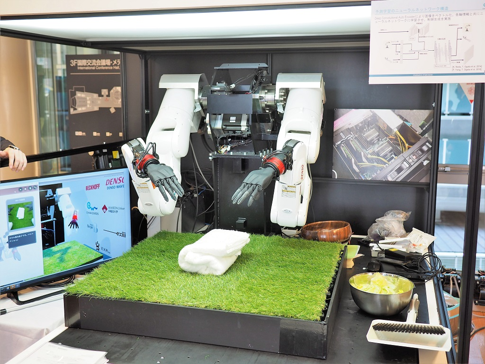
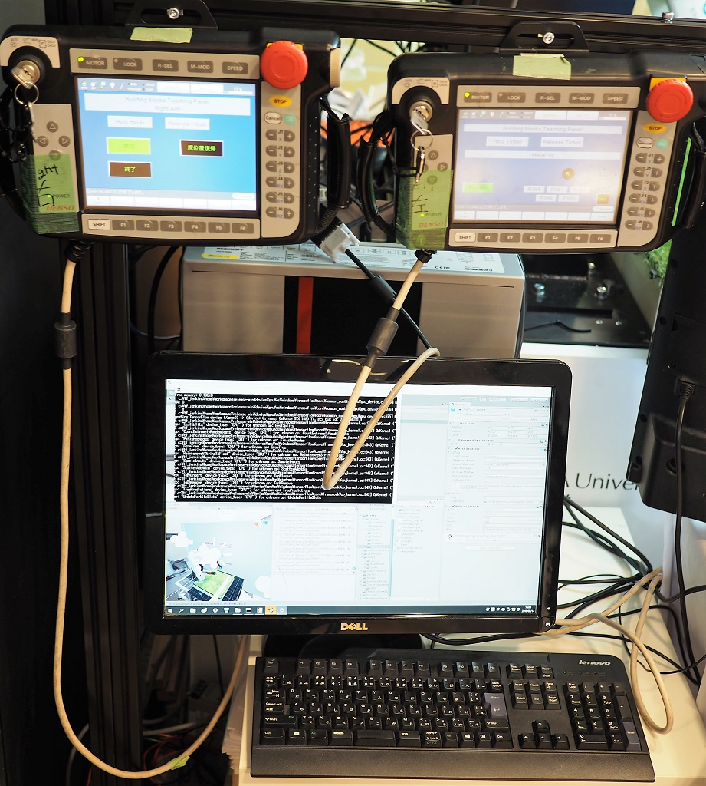

MKOIKAWA
20180315
Science Robotics Meeting in Japan2018
表題に行ってきました。学術発表っぽい非常にコンパクトな展示会だったのですが、じっくり見るとかなり面白く、次回は有楽町の国際フォーラムとかもう少し一般向けっぽい所でやっても良いと思います。説明つければ高校生ぐらいで十分理解でき楽しめる範疇です。
目玉は、早稲田の尾形 哲也 教授 率いる Multi-modal AI ロボットです。従来の産業ロボットはプログラミングから人の操作をまねるだけで動かしていましたが、これは Neural Network 1 だけ で動かしています。
DENSO Multi-modal AI ロボット 
写真はタオルを畳むデモです。不定形でCADデータがないものは従来の産業用ロボでは対応しづらかったが、Multi-modal AI なら対応できるし、タオルが変わってもいけるし、本まで閉じられたし、最近やっと服を畳めるようになったそうです。今回はサラダ盛り付けを覚えさせてきました。
どうやっているのかと聞いたら、呆れるぐらいにシンプルでした。カメラ画像とかモーターのセンサーデータを過去63フレーム分 RNN 2 にぶち込んで、次のフレームを推論させ、出てきた画像データに適合するようにモーターを動かす。覚えさせる時は 200 パターンぐらい人間が VR 経由でロボを制御して RNN の各ノードに重みづけをさせる。なので、たぶん、ロボが自分で勝手に学習して新しい動きを獲得する事は無いと思います。学習は Heavy Task で実行はスマホでもできる軽い処理というのは、類似画像検索の CNN と同じ Deep Learning の非対称性ですね。産業用ロボとしては、勝手に癖を覚えないのは良さそうです。
話を聞いた瞬間「危なくないのですか！」と説明員に聞いてしまいました。なにせ、次にどのように動くか RNN の気分次第なので。説明員も痛い目にあったらしく、バーチャルフェンスの話をしてくれました。VR とか Kinect とか ドローンとかではセーフティゾーンと言われている奴ですね。
制御装置 
動き始めは前フレームがなくて何をしでかすかわからず、写真右上にある赤色の緊急停止ボタンに手を載せてから動かし始めるそうです。二つあるのは両手分。未来画像の推論生成 RNN は Windows 一台で動いているのが良くわかります。
すごく面白かったのが、開発ストーリー。
教授とメンバーが出会った後、教授が AI 開発のできるエクサウィザーズを連れてきて最初の Meeting をしたのが 5月19 日。そこで話し合ってホワイトボードにアーキテクチャをまとめ、「汎用部品で汎用ロボを作る」というコンセプトが決まったそうです。AI のコーディングが終わってロボを動かせるようになり部品選定を始められるようになったのが、夏。3か月で AI 部分の実装は終わったそうですが、まぁ、RNN にぶち込むだけなので、いけますよね。部品選定始めたら、海外から取り寄せた手のひらがトルク不足で何も持てなかったり、難航しながらなんとかアームっぽくなったのが9月。そこからカメラを頭に取り付けたりして、VR 操縦をして、やっぱり 20 代は VR 操作に慣れるのが一発で行ける、ニュータイプだ、僕ら全員オールドタイプとかよたっていながらも、11月のロボット展に出展してしまいます。すごい早いです。nVidia の展示会に出したら、海外にも持ってきてくれとお声がかかったそうです。
たぶん、DENSO がロボのメカ部分、BECKHOFF が GPU などの処理部分、エクサウィザーズ が AI 部分を担当したようです。DENSO の方が「Visual Studio のたった一つのプロジェクトだけで、Unity と Python を使った開発が出来てしまった。こんなに楽な環境は他にないだろう」と言っていました。これ、すごく良い MS 事例ですよね。そりゃまぁ、Unity で VR、Python で AI だったら、数か月で動くのも納得です。
チームは Slack でやり取りしたそうです。尾形教授は「僕は Slack に参加しただけ」とおっしゃっていましたが、現場に行かずに Slack でリモートチームが運用できた事例だと思います。
安全性、実用性、速度 の観点から実用化はまだ距離があって、あくまで Academic の世界ではありますが、この開発環境とチーム運用体制はなんにでも使えそうです。
セック 屋内自立移動ロボット「ソフトウェア」

時間的制約で講演は聞けなかったのですが、株式会社セックが自立移動ロボの展示をしていました。赤外線センサーで自動地図描画をするそうです。まだ画像認識をつけておらず、赤外線センサーも 20m しか測定できないため QR コードを貼って誘導しなくてはいけないなど、ハード的には見る所が無いのですが、ここのウリはソフトです。ロボ制御ソフトの販売に注力しているそうで、コンポーネント化、安全基準、IEC61508SIL3 Capable 認証取得 など、着実に積み上げています。試作特化型の Multi-modal AI に比べ、ある程度な性能の量産型のイメージでしょうか。